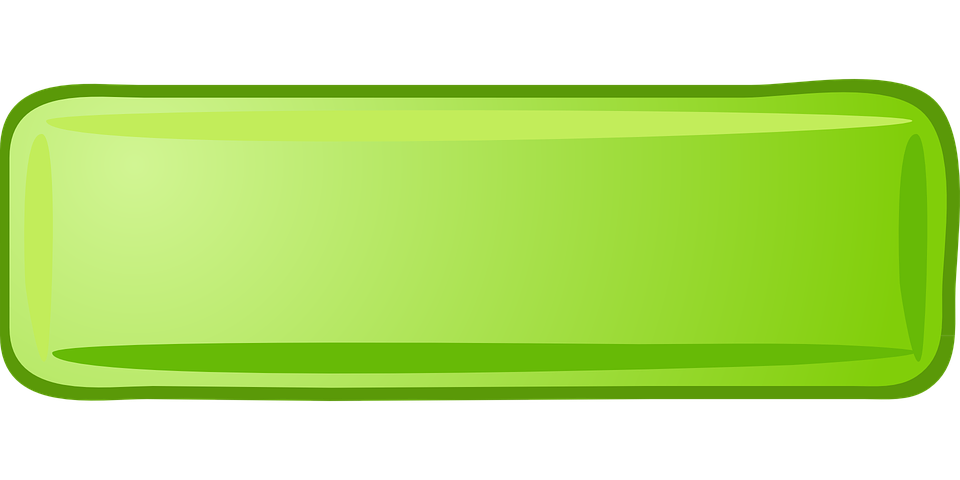
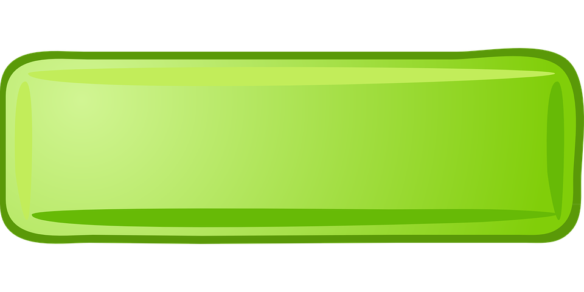

0
 

a. Plants get their
from bacteria in the soil.
b. Water in its purest form is obtained using the process of
.
d.
is the heaviest layer of the atmosphere.
e. The solid left behind in the process of filtration is called
.
Distillation
Residue
Troposphere
Food